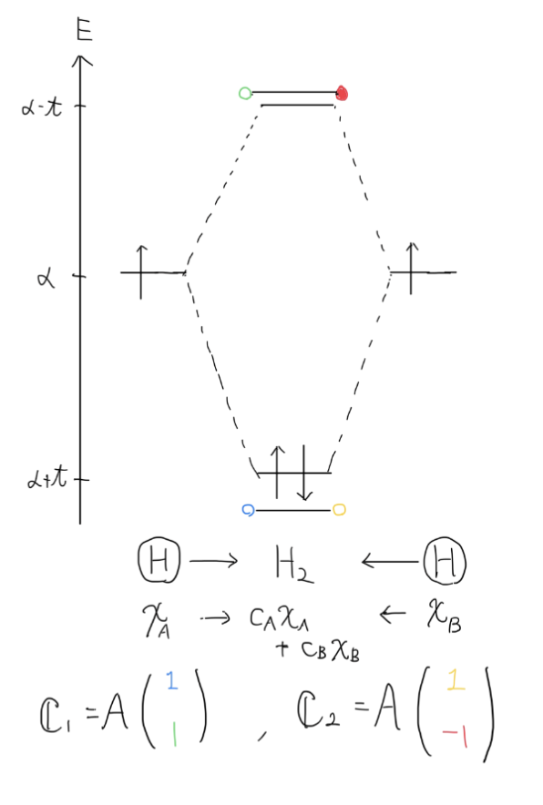

シュレディンガー方程式
$$
\begin{equation}
\hat{H} \Psi=E\Psi
\end{equation}
$$
これを変分法で解く。
変分法を用いて 2 階偏微分方程式を連立斉次方程式にして解ける形にする。
任意の関数$f$は、任意の関数系$\chi$を用いて、
$$
f=\sum_i C_i\chi_i
$$
と展開できることを用いて、シュレディンガー方程式の解である波動関数$\Psi$を
$$
\Psi=\sum_i C_i\chi_i
$$
と展開する。
ノリは Fourier 級数展開と同じ
$$
f(x)=\sum_q F_qe^{iqx}
$$
これをシュレディンガー方程式に代入して
$$
\sum_iC_i\hat{H}\chi_i=E\sum_iC_i\chi_i
$$
両辺に左から$\chi_j~*$をかけて全空間積分をすると
$$
\int\chi_j^\sum_iC_i\hat{H}\chi_id\boldsymbol{r}=E\int\chi_j^\sum_iC_i\chi_id\boldsymbol{r}
$$
積分と$\sum$を入れ替えて、整理すると以下のようになる
$$
\sum_iC_i\int\chi_j^\hat{H}\chi_id\boldsymbol{r}=E\sum_iC_i\int\chi_j^\chi_id\boldsymbol{r}
$$
ここで両辺の積分部分を
$$
\begin{align}
S_{ji}&=\int\chi_j^\chi_id\boldsymbol{r}\
H_{ji}&=\int\chi_j^\hat{H}\chi_id\boldsymbol{r}
\end{align}
$$
とおく。さらに重なり積分と呼ばれる$S_{ji}$についてHückel近似を用いて
$$
S_{ji}=\delta_{ji}
$$
とする。
$S_{ji}$ : 重なり積分は波の重ね合わせ、$j$番目の波と$i$番目の波の重なり具合を表している。少しでもずれていると、その重なりは 0 であると、捉えても良い。という近似
これより、シュレディンガー方程式は
$$
\sum_iC_iH_{ji}=E\sum_iC_i\delta_{ji}
$$
これを$j=1,2,3...$の時で並べて書いてみると
$$
\begin{align*}
C_1H_{11}+C_2H_{12}+C_3H_{13}+\cdots&=EC_1\
C_1H_{21}+C_2H_{22}+C_3H_{23}+\cdots&=EC_2\
C_1H_{31}+C_2H_{32}+C_3H_{33}+\cdots&=EC_3\
\end{align*}
$$
これを敷衍していくと
$$
\mathbb{C}=
\begin{pmatrix}
c_1 \
c_2 \
c_3 \
\vdots
\end{pmatrix}
,,,
\mathbb{H'}=
\begin{pmatrix}
H_{11}-E & H_{12} & H_{13} & \cdots\
H_{21} & H_{22}-E & H_{23} & \cdots\
H_{31} & H_{32} & \ddots & \vdots\
\vdots & \cdots & \cdots
\end{pmatrix}
$$
とおけば
$$
\mathbb{CH'}=\mathbb{0}
$$
となり、$\mathbb{C}$を固有ベクトル, $E$を固有値とする固有値問題に帰着される。
$$
\mathbb{H}=
\begin{pmatrix}
H_{11} & H_{12} & H_{13} & \cdots\
H_{21} & H_{22} & H_{23} & \cdots\
H_{31} & H_{32} & \ddots & \vdots\
\vdots & \cdots & \cdots
\end{pmatrix}
$$
とおいた時に
$$
\mathbb{CH}=E\mathbb{H}
$$
このように見た方が、固有値と固有ベクトルの関係がわかりやすい
$\mathbb{C}$の非自明解(物理的意味を持つ解)の条件は
$$
\det(\mathbb{H}-E\mathbb{I})= \det\mathbb{H'}=0
$$
これは数値計算によって解ける状態になった。
$\mathbb{C}$を元に$\Psi$を求め、それに対応するエネルギーが$E$となる。
任意の関数$\Phi(\mathbb{r})$と、任意の演算子$\hat{A}$について、演算子の期待値$\langle{}\hat{A}\rangle{}$を以下のように定義する
$$
\langle{}\hat{A}\rangle{}\coloneqq\frac{\int\Phi^\hat{A}\Phi d\mathbb{r}}{\int\Phi^\Phi d\mathbb{r}}
$$
この定義から、エネルギーに対応する演算子は$\hat{H}$であるため、エネルギーの期待値$\langle{}\varepsilon\rangle{}$は
$$
\langle{}\varepsilon[\Phi]\rangle{}=\frac{\int\Phi^\hat{H}\Phi d\mathbb{r}}{\int\Phi^\Phi d\mathbb{r}}
$$
となる
変分原理とは以下のような定理
$$
\langle{}\varepsilon[\Phi]\rangle{}\geq E_1
$$
任意の関数系$\Phi$で求められたエネルギーの期待値は、基底状態のエネルギー(エネルギー固有値の最小のもの)より大きい
波動関数$\Psi$の完全規格直交性より任意の関数$\Phi$は以下のように展開できる
$$
\Phi=\sum_kC_k\Psi_k
$$
よって$\langle{}\varepsilon[\Phi]\rangle{}$は
$$
\langle{}\varepsilon[\Phi]\rangle{}=\frac{\int\Phi^\hat{H}\Phi d\mathbb{r}}{\int\Phi^\Phi d\mathbb{r}}
$$
$$
\begin{align*}
(分母)=\int\Phi^\Phi d\mathbb{r}
&=\int(\sum_kC_k\Psi_k)^(\sum_lC_l\Psi_l)d\mathbb{r}\
&=\sum_k\sum_lC_k^*C_l\delta_{kl}\
&=\sum_kC_k^C_k = \sum_k|C_k|^2\
\end{align}
$$
(ただし、分母の計算の際には Hückel 近似を用いた)
$$
\begin{align*}
(分子)=\int\Phi^\Phi d\mathbb{r}
&=\int(\sum_kC_k\Psi_k)^\hat{H}(\sum_lC_l\Psi_l)d\mathbb{r}\
&=\sum_k\sum_lC_k^C_l\int\Psi_k^\hat{H}\Psi_ld\mathbb{r}\
\end{align*}
$$
ここで、$\Psi$は波動関数であり、シュレディンガー方程式を満たすため、$\hat{H}\Psi=E\Psi$が成り立つ。
$$
\begin{align*}
(分子)&=\sum_k\sum_lC_k^C_lE_l\int\Psi_k^\Psi_ld\mathbb{r}\
&=\sum_k\sum_lC_k^C_lE_l\delta_{kl}\
&=\sum_k|C_k|^2E_k
\end{align}
$$
ここで、シュレディンガー方程式から求められたエネルギー$E_1, E_2, E_3\cdots$に対して$E_1\leq E_2\leq E_3\leq \cdots$と定めておくと
$$
\langle{}\varepsilon[\Phi]\rangle{}=\frac{\sum_k|C_k|^2E_k}{\sum_k|C_k|^2}\geq \frac{\sum_k|C_k|^2E_1}{\sum_k|C_k|^2}=E_1
$$
等号成立は$E_1=E_2=E_3=\cdots$(実際にはあまりおこらない)
任意の関数がたとえば波動関数$\Phi=\Psi$ならば
$$
\langle{}\varepsilon[\Phi]\rangle{}=\frac{\int\Phi^\hat{H}\Phi d\mathbb{r}}{\int\Phi^\Phi d\mathbb{r}}=\frac{\int\Psi^\hat{H}\Psi d\mathbb{r}}{\int\Psi^\Psi d\mathbb{r}}=E
$$
となる。が、波動関数がわかっていない時には
パラメータである$\Phi$を変えながら、$\langle{}\varepsilon[\Phi]\rangle{}$の極小値を求めればいい
$$
\langle{}\varepsilon[\Phi]\rangle{}(C_1,C_2,\cdots )
$$
この最小値を求めるには
$$
\frac{\partial \varepsilon}{\partial C_1}=\frac{\partial \varepsilon}{\partial C_2}=\frac{\partial \varepsilon}{\partial C_3}=\dots=0
$$
となるような$(C_1,C_2, C_3,\cdots)$を決定すればいい
より一般に$\frac{\partial \varepsilon}{\partial c_i^*}$について考える。
$$
\Phi=\sum_iC_i\chi_i
$$
これを用いて、Hückel近似を使わずに$\langle{}\varepsilon[\Phi]\rangle{}$を表すと以下のようになる。
注意すべき点は今の仮定では$\Phi=\Psi$とは限らないため、変分原理の証明の際のような変形($\hat{H}\Psi=E\Psi$を使う変形)はできないこと。
(また実際には今は任意の関数系$\chi$で展開しているため、Hückel近似が使えるかはわからない)
$$
\begin{equation}
\langle{}\varepsilon[\Phi]\rangle{}=\frac{\sum_i\sum_jC_i^*H_{ij}C_j}{\sum_i\sum_jC_i^*S_{ij}C_j}
\end{equation}
$$
と与えられるため
$$
\frac{\partial \varepsilon}{\partial c_i^*}=\frac{(\sum_jH_{ij}C_j)(\sum_i\sum_jC_i^*S_{ij}C_j)-(\sum_i\sum_jC_i^*H_{ij}C_j)(\sum_jS_{ij}C_j)}{(\sum_i\sum_jC_i^*S_{ij}C_j)^2}=0
$$
これは
$$
(\sum_jH_{ij}C_j)(\sum_i\sum_jC_i^*S_{ij}C_j)-(\sum_i\sum_jC_i^*H_{ij}C_j)(\sum_jS_{ij}C_j)=0
$$
となり、さらに(4)式を使って
$$
(\sum_jH_{ij}C_j)(\sum_i\sum_jC_i^*S_{ij}C_j)-\langle{}\varepsilon[\Phi]\rangle{}(\sum_i\sum_jC_i^*S_{ij}C_j)(\sum_jS_{ij}C_j)=0
$$
$$
(\sum_jH_{ij}C_j)-\langle{}\varepsilon[\Phi]\rangle{}(\sum_jS_{ij}C_j)=0
$$
これは以下のように書ける。
$$
\sum_j(H_{ij}-\langle{}\varepsilon[\Phi]\rangle{}S_{ij})C_j=0
$$
$i=1,2,3$について、それぞれ並べて書いてみる
$$
\begin{align*}
C_1(H_{11}-\varepsilon S_{11})+C_2(H_{12}-\varepsilon S_{12})+C_3(H_{13}-\varepsilon S_{13})+\cdots&=0\
C_1(H_{21}-\varepsilon S_{21})+C_2(H_{22}-\varepsilon S_{22})+C_3(H_{23}-\varepsilon S_{23})+\cdots&=0\
C_1(H_{31}-\varepsilon S_{31})+C_2(H_{32}-\varepsilon S_{32})+C_3(H_{33}-\varepsilon S_{33})+\cdots&=0\
\end{align*}
$$
これを敷衍すると
$$
\mathbb{C}=
\begin{pmatrix}
c_1 \
c_2 \
c_3 \
\vdots
\end{pmatrix}
,,,
\mathbb{H'}=
\begin{pmatrix}
H_{11}-\varepsilon S_{11} & H_{12}-\varepsilon S_{12} & H_{13}-\varepsilon S_{13} & \cdots\
H_{21}-\varepsilon S_{21} & H_{22}-\varepsilon S_{22} & H_{23}-\varepsilon S_{23} & \cdots\
H_{31}-\varepsilon S_{31} & H_{32}-\varepsilon S_{32} & \ddots & \vdots\
\vdots & \cdots & \cdots
\end{pmatrix}
$$
$$
\mathbb{CH'}=\mathbb{0}
$$
これはエネルギー期待値が極小値を持つ条件である。$\mathbb{C}$が非自明な解を持つ条件は$det(\mathbb{H'})=0$
$\chi$がシュレディンガー方程式を満たす波動関数ならばHückel近似を用いれば以下のように$\mathbb{H'}$はやや簡便になる
$$
\mathbb{H'}=
\begin{pmatrix}
H_{11}-\varepsilon & H_{12} & H_{13} & \cdots\
H_{21} & H_{22}-\varepsilon & H_{23} & \cdots\
H_{31} & H_{32} & \ddots & \vdots\
\vdots & \cdots & \cdots
\end{pmatrix}
$$
2 原子分子$AB$について考える
原子 A は$\chi_A$, 原子 B は$\chi_B$という固有の原子軌道を持っている(ex 1s, 2s 軌道)時、AB が分子になった時に新たにできる分子軌道$\Psi$は
$$
\Psi=C_A\chi_A+C_B\chi_B
$$
と表せる。(LCAO 近似)
この時 A, B はそれぞれ 1 つずつしか軌道を持っていない($A$が$\chi_A$という軌道のみしか持っていない)とすると
$$
\begin{pmatrix}
H_{11}-\varepsilon & H_{12}\
H_{21} & H_{22}-\varepsilon\
\end{pmatrix}\begin{pmatrix}
C_A\
C_B\
\end{pmatrix}=0
$$
ここで、仮定として
$$
H_{ij}=\left{
\begin{align*}
\quad &\alpha &(i=j)\
\quad &t &(i\neq j)
\end{align*}
\right.
$$
$\alpha$: on-site energy 原子自体が持つエネルギー, $t$: transfer energy 2 原子間の相互作用エネルギー
とすれば$det(\mathbb{H'})$を解くと $\varepsilon=\alpha\pm t$となる。対応する固有ベクトルは
(この仮定は同原子の 2 原子分子の時に有効、$H_2$など)
$$
\mathbb{C_1}=A\begin{pmatrix}
1\
1
\end{pmatrix}
,,,
,
\mathbb{C_2}=A\begin{pmatrix}
1\
-1
\end{pmatrix}
$$
規格化を行えば$A=\frac{1}{\sqrt{2}}$とわかる。
水素分子について考えると
エネルギー固有値の$\varepsilon=\alpha\pm t$はそれぞれ、結合性軌道と反結合性軌道のエネルギーを表している。

$$
\hat{H}\Psi=E\Psi
$$
未知数は$\Psi$と$E$(実際には複数の$(\Psi,E)$組が解となる)
解法としては変分法(Litz の変分法)を用いた
$$
\mathbb{H'C}=0
$$
これを満たす$\mathbb{C}$と$E$を求める問題に帰着した。before 変分法と after 変分法で、以下のような関係がある。
$$
\Psi=\sum_iC_i\chi_i ,, , , H_{ij}=\int\chi_i\hat{H}\chi_jd\mathbb{r}
$$
(ただし、$\chi$は任意の関数系を選択する)
これでシュレディンガー方程式を解くことまではできた。が、$\hat{H}$が単純な形で描かれることは稀である。たとえば 2 原子、3 原子分子の全体の波動関数を求めようとすると、$\hat{H}$が簡単な形にならず、$\Psi$を解くこと自体が難しい。
1 つの原子の波動関数は簡単だが、多原子になると難しいという問題が生じる
LCAO 近似を用いる。(Linear-combination-of-atomic-orbitals 法)
全体の波動関数は部分の波動関数の線形結合で表せると仮定する近似
$$
\Psi=C_A\Psi_A+C_B\Psi_B
$$
これを用いると、多原子分子の波動関数を知りたい時に、それを構成する単原子の波動関数の線型結合で求めることができるようになる。その上、$\mathbb{H'}$ および$\mathbb{C}$も有限次元の行列となるため、計算が容易
$$
\mathbb{CH'}=\mathbb{0}
$$
またそれぞれの固有ベクトル$\mathbb{C}$の成分が、部分の波動関数の構成比になることがわかった。
$\mathbb{C}$の数分だけ、結合軌道と半結合軌道が生まれる。というとこまでわかった。
次回以降はどことどこの軌道が混成軌道を作るのかを決定できるようになる...らしい。(群論の知識が必要)